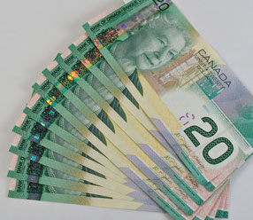

When I highlighted N+ in my xbox 360 dashboard, there's a thing that says "Time left". Does that mean I will have to purchase this game again once its gone to 0?
Actually, the "time left" you're talking about is like the typical "high scores". The more time you have left, the higher your score is.
Btw... That would be pretty shady if we had to buy N+ again and again (and again) when time ran out...
Btw... That would be pretty shady if we had to buy N+ again and again (and again) when time ran out...
Yes, it would suck.
But, no worries though. As Kurosaki Jono said, it just represents the time you have left in all of the levels together, which also shows as your highscore.
But, no worries though. As Kurosaki Jono said, it just represents the time you have left in all of the levels together, which also shows as your highscore.
When I highlighted N+ in my xbox 360 dashboard, there's a thing that says "Time left". Does that mean I will have to purchase this game again once its gone to 0?
When the time reaches zero, you'll die and have to replay the level again. Try collecting gold in the levels to prevent that from happening.
Btw... That would be pretty shady if we had to buy N+ again and again (and again) when time ran out..."Money Money Money Monnn-ey.... MAHHH-NNY!"


I'm not sure about the business ethics behind it but it would certainly discourage slow gameplay and maximize profit.. Remember kids... N is cheaper than crack but just as (if not more) addictive.

Cute, Ska. Very cute.